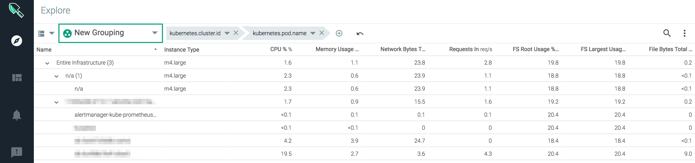

Kubernetes Agent Installation Steps
Preparation
Kernel Headers
The Sysdig agent requires kernel header files to install successfully on a host.
Note
This setup step is required for some environments and not others, as noted.
If the hosts in your environment match the pre-compiled kernel modules available from Sysdig, no special action is required.
In some cases, the host(s) in your environment may use Unix versions that do not match the provided headers, and the agent may fail to install correctly. In those cases, you must install the kernel headers manually.
To do so:
For Debian-style distributions, run the command:
apt-get -y install linux-headers-$(uname -r)
For RHEL-style distributions, run the command:
yum -y install kernel-devel-$(uname -r)
Background info: see also About Kernel Headers and the Kernel Module.
Containerd Support
As of agent version 0.88.1, the Sysdig agent will automatically detect containerd metadata (as well as any Docker metadata) in your environment, as long as the Prerequisites are fulfilled.
Prerequisites
Agent version: Sysdig agent version 0.88.1 or higher
NOTE: If you are upgrading from an earlier version of the agent, you must also download the latest
sysdig-agent-daemonset-v2.yamlfrom GitHub.Configuration parameter: In the agent config file,
new_k8s: truemust be set.See Enable Kube State Metrics and Cluster Name below for details on editing the config file.
Kubernetes-only: The containerd API must support CRI (a Kubernetes runtime interface).
Results in the Sysdig Monitor UI
If the Sysdig agent detects containerd metadata, it will be reported in the front end as follows:
Explore/Dashboard views: The icon next to container-specific items (container.name, container.id, etc.) shows whether it's a Docker or containerd object.

Spotlight: Updated for containerd display.
Events: Containerd events
dieandoomare enabled by default.Events
createandexitare also supported.
CRI-O Support
As of the SaaS March release, the Sysdig agent will automatically detect CRI-O metadata (as well as any Docker and/or containerd metadata) in your environment, as long as the Prerequisites are fulfilled.
Prerequisites
Platform version: Sysdig SaaS March 2019 or higher
Agent version: Sysdig agent version 0.89.4 or higher
NOTE: If you are upgrading from an earlier version of the agent, you must also download the latest
sysdig-agent-daemonset-v2.yamlfrom GitHub.Configuration parameter: In the agent config file,
new_k8s: truemust be set.See Enable Kube State Metrics and Cluster Name below for details on editing the config file.
Kubernetes-only: The API must support CRI (a Kubernetes runtime interface).
Results in the Sysdig Monitor UI
Events: There are no CRI-O events, so the Events pane remains unchanged.
Explore/Dashboard views: The icon next to container-specific items (container.name, container.id, etc.) shows CRI-O type.
Supported Metrics: By default, the same metrics are supported for CRI-O as for Docker and containerd, except for image id (
container.image.id).
Enabling Image ID Metrics with cri: extra_queries
To enable image id metrics, edit the agent configuration file dragent.yaml to contain the following:
cri: extra_queries: true
See Understanding the Agent Config Files for more information on editing dragent.yaml.
Background Info
You can review Agent Install: Kubernetes | GKE | OpenShift | IBM and the Host Requirements for Agent Installation for additional context, if desired.
Installation Steps
To deploy agents using Kubernetes daemonsets, you will download the following configuration files, edit them as required, and deploy them.
sysdig-agent-clusterrole.yaml sysdig-agent-daemonset-v2.yaml
Note
HELM CHART OPTIONKubernetes also offers a package manager, Helm, which uses charts to simplify this process.
If you are using Helm charts in your K8s environment, we recommend using them to deploy Sysdig agents, as described here.
Deploy the Agents
Download the sample files
sysdig-agent-clusterrole.yaml,sysdig-agent-daemonset-v2.yaml,andsysdig-agent-configmap.yaml.Create a namespace to use for the Sysdig agent.
Note
You can use whatever naming you prefer. In this document, we used
sysdig-agentfor both the namespace and the service account.The default service account name was automatically defined in
sysdig-agent-daemonset-v2.yaml, atthe line:serviceAccount: sysdig-agent.kubectl create ns sysdig-agent
Create a secret key using the command:
kubectl create secret generic sysdig-agent --from-literal=access-key=<your sysdig access key> -n sysdig-agent
Create a cluster role and service account, and define the cluster role binding that grants the Sysdig agent rules in the cluster role, using the commands:
kubectl apply -f sysdig-agent-clusterrole.yaml -n sysdig-agent kubectl create serviceaccount sysdig-agent -n sysdig-agent kubectl create clusterrolebinding sysdig-agent --clusterrole=sysdig-agent --serviceaccount=sysdig-agent:sysdig-agent
FOR ON-PREM INSTALLATIONS ONLY: Edit
configmap.yamlto add thecollectoraddressandport, andSSL/TLSinformation :collector: collector_port: ssl: #true or false ssl_verify_certificate: #true or falseNote
ssl_verify_certificateshould be set to false if a self-signed certificate or private, CA-signed cert is used. See information about SSL in on-premises here.(ALL INSTALLS): Apply the
configmap.yamlfile using the command:kubectl apply -f sysdig-agent-configmap.yaml -n sysdig-agent
(ALL INSTALLS): Apply the
daemonset-v2.yamlfile using the command:kubectl apply -f sysdig-agent-daemonset-v2.yaml -n sysdig-agent
The agents will be deployed and you can check the Monitor UI to see some metrics. You can make further edits to the configmap as described below.
Enable Kube State Metrics and Cluster Name
These steps are optional but recommended.
Edit
sysdig-agent-configmap.yamlto uncomment the line:new_k8s: trueThis allows kube state metrics to be automatically detected, monitored, and displayed in Sysdig Monitor.
For more information, see the Kube State Metrics entry in the Sysdig blog.
Edit
sysdig-agent-configmap.yamlto uncomment the line:k8s_cluster_name:and add your cluster name.Setting cluster name here allows you to view, scope, and segment metrics in the Sysdig Monitor UI by Kubernetes cluster.
Note: Alternatively, if you assign a tag with "
cluster" in the tag name, Sysdig Monitor will display that as the Kubernetes cluster name.Apply the configmap changes using the command:
kubectl apply -f sysdig-agent-configmap.yaml -n sysdig-agent
Proceed to verify the metrics in the Sysdig Monitor UI.
Note
There are two ways to update the agent configuration:
Option 1: Edit the files locally and apply the changes with kubectl apply -f:
kubectl apply -f sysdig-agent-configmap.yaml -n sysdig-agent
Option 2: Use kubectl edit to edit files on the fly:
kubectl edit configmap sysdig-agent -n sysdig-agent
Running agents will automatically pick the new configuration after Kubernetes pushes the changes across all the nodes in the cluster.
Verify Metrics in Sysdig Monitor UI
Log in to Sysdig Monitor to verify that the agent deployed and the metrics are detected and collected appropriately.
The steps below give one way to do the check.
(See also Sysdig Monitor Documentation.)
Access Sysdig Monitor:
SaaS: https://app.sysdigcloud.com
Log in with your Sysdig user name and password.
Select the
Exploretab to see if metrics are displayed.(Once you have enabled
new_k8s:true)To verify that kube state metrics and cluster name are working correctly: Select the
Exploretab and create a grouping bykubernetes.cluster.nameandkubernetes.pod.name. Select an individual container or pod to see details.

Note
Kubernetes metadata (pods, deployments etc.) appear a minute or two later than the nodes/containers themselves; if pod names do not appear immediately, wait and retry the Explore view.
If agents are disconnecting, there could be an issue with your MAC addresses. See Troubleshooting Agent Installation for tips.
Additional Options
Connect to the Sysdig Backend via Static IPs (SaaS only)
Sysdig provides a list of static IP addresses that can be whitelisted in a Sysdig environment, allowing users to establish a network connection to the Sysdig backend without opening complete network connectivity. This is done by setting the Collector IP to collector-static.sysdigcloud.com .
Note
The sysdig-agent-configmap.yaml file can be edited either locally or using the edit command in Kubernetes. refer to the section above for more information.
To configure the collector IP in a Kubernetes SaaS instance:
Open
sysdig-agent-configmap.yamlin a text editor.Uncomment the following lines:
collector:
collector_port
Set the collector: value to collector-static.sysdigcloud.com
Set the collector_port: value to 6443
Save the file.
The example file below shows how the sysdig-agent-configmap.yaml file should look after configuration:
apiVersion: v1
kind: ConfigMap
metadata:
name: sysdig-agent
data:
dragent.yaml: |
### Agent tags
# tags: linux:ubuntu,dept:dev,local:nyc
#### Sysdig Software related config ####
# Sysdig collector address
collector: collector-static.sysdigcloud.com
# Collector TCP port
collector_port: 6443
# Whether collector accepts ssl/TLS
ssl: true
# collector certificate validation
ssl_verify_certificate: true
# Sysdig Secure
security:
enabled: true
#######################################
# new_k8s: true
# k8s_cluster_name: production